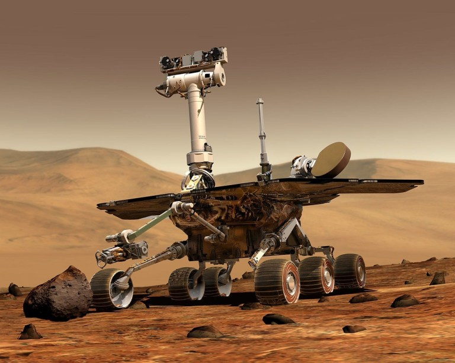

Opportunity
por Rafael Gallardo
La duración de la misión original para Opportunity era de 90 días marcianos. Muchos miembros de la misión esperaban que pudieran funcionar más tiempo, y el 8 de abril de 2004 la NASA anunció que apoyaba la extensión de la misión hasta septiembre de 2004, dotándola con fondos y mano de obra. En julio de 2004, los encargados de la misión empezaron a hablar de extender la misión incluso más allá de los 250 días. Si los robots pudieran sobrevivir el invierno, muchas de las metas científicas más interesantes se podrían conseguir.1 En 2015, tras más de once años en Marte, el Opportunity continúa sus labores de investigación.2